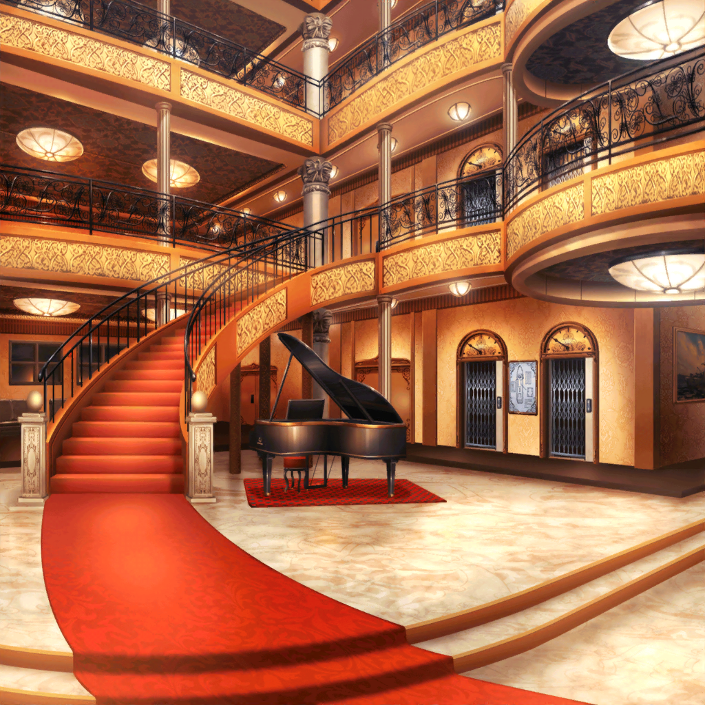

スマイル号
はぐみ
すごーい！
すっごいすっごいすっごーい！
美咲
はぐみ、うるさい。
騒ぎすぎ
はぐみ
だって！
外見て！ 夜景！
花音
わぁ、すごーい……！
ねえ、美咲ちゃんも見て！
キレイだよ！
美咲
あー、ほんとだ。
予想以上にきれい……
こころ
出発して１時間ぐらい経ったかしら？
そろそろ甲板に出てみましょう！
はぐみ
甲板！
かっこいい！！
行きたーい！
花音
こんな素敵な船から夜景を見られるなんて……えへへ♪
花音
練習日を決めるためだけに集まったのに、
こころちゃんに感謝しないとね
美咲
……まぁ、結局練習日は決まってないですけどね
謎のスーツの集団
松原様、お楽しみ中に失礼いたします。
ちょうど松原様にぴったりのお召し物をご用意しましたので、
こちらでお着替えください
花音
えっ。その……
はぐみ
こころん！
早く甲板行こう！
出口どこ！？
こころ
あっちよ。
行きま……

はぐみ
えええええええええええ！？
な、なんか急に暗くなっちゃったよ！？
こころ
どうしたのかしら？
美咲
停電でしょ、すぐに電気つくって。
こんなに大きい船なんだし、予備電源のひとつやふたつあるよ
美咲
ほら、電気ついたって……え！？
？？？
豪華客船『スマイル号』へようこそ！
素敵な夜だね、可愛いお嬢さん達
はぐみ
うわっ！ あれ誰！？
こころ
うーん、あたしの知り合いではないわね！
美咲
ん？ なんだかよく知った声のような……
？？？
ふふ、私の名は怪盗ハロハッピー。
今宵、私のほしいものをいただきにきたのさ
美咲
名前ださっ！ それでいいの！？
こころ
怪盗さん！ すっごく目立つわね！
薫に会ったときみたいな感じだわ！
ハロハピに入らない？
美咲
いやいや、この状況で何言ってるの！？
何者だかよくわからないのに
こころ
ところで怪盗さん、あなたがほしいものってなんなの？
美咲
あたしの意見は無視かい
怪盗ハロハッピー
私のほしいものは……最後に教えてあげよう
怪盗ハロハッピー
突然だが、この麗しいお姫様をさらわせてもらうよ
花音
ひゃっ！？
怪盗ハロハッピー
ああ、囚われのお姫様、そんな不安そうな顔をしないで。
大丈夫、何も怖いことはないよ
花音
は、離してっ……！
はぐみ
かのちゃん先輩！？
……あれ、いつの間にかお姫様の格好してる！？
こころ
怪盗さん！
花音に何をするつもりなの？
怪盗ハロハッピー
何もするつもりはない。
ただ、君達には私と戯れてもらうだけだよ
怪盗ハロハッピー
いいかい？ 君達が私を捕まえることができれば、
このお姫様は返そう
怪盗ハロハッピー
まずはカジノで待つ。
さらばっ！
花音
きゃ～！ 助けてぇー！
はぐみ
か、かのちゃん先輩抱えたまま、行っちゃったよ！？
こころ
急いで追いかけるわよ！
はぐみ
みーくん！
一緒に来て！
怪盗を捕まえよう！
美咲
はいはい
こころ
薫も行くわよ！
こころ
……って、あら？
薫はどこに行ったのかしら？
はぐみ
ええ！？
薫くんもいなくなっちゃったの！？
美咲
…………そう、そういうことか。
あの声、あの見た目でここにいないってことは……。
やっぱり、あの怪盗、あの人じゃん
こころ
きっと迷子になったんだわ！
薫はあとで迎えにいくとして、それより早く花音を助けないと！
はぐみ
うん！
怪盗にさらわれたままじゃ心配だもん！
美咲
そんな慌てなくても……
怪盗は何もしないって言ってたわけで
はぐみ
でも怪盗だよ！？
かのちゃん先輩があんなことや、こんなことや、
そーんなことされちゃうかも！
美咲
まぁ落ち着きなって。
大丈夫だよ、あの怪盗はそんなことしないから
こころ
どんな怪盗さんだろうが、関係ないわ！
花音はあたし達の大切な仲間よ？
さあ、カジノに行きましょう！
はぐみ
あ、こころん待ってよー！！
美咲
やれやれ……。あの怪盗が何を考えてるのかは知らないけど、
とりあえずこころ達について行こうかな。
ちょっとー、２人ともカジノはそっちじゃないよ！